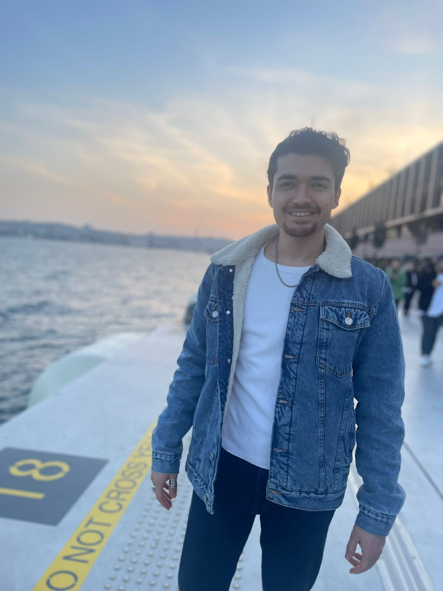

<!DOCTYPE html>
<html lang="en">
<head>
  <meta charset="UTF-8">
  <meta http-equiv="X-UA-Compatible" content="IE=edge">
  <meta name="viewport" content="width=device-width, initial-scale=1.0">
  <title>Document</title>
</head>
<body>
  

<!-- image çalışması -->

<!-- img yapıp tab yapıyoruz -->

 
<!-- src kaynak (source) . alt ise text bilgisi. herhangi bir web sayfasındaki resmi sağ tuş copy source yapabilrsin -->

<!-- lorem picsum ile rastgele foto kaydedebiliriz.-->


<!-- width ve height ile resmin yükseklik ve boyunu ayarlama            


<!-- title="" Kullanımı
Title özelliği kullanıcıyı bilgilendirme amacı taşır. Cursor(mouse imleci) ile görselin üzerine gelince bu özelliğe verilen text mesajı görünür. Ek açıklama gerektirecek resimlerde kullanabiliriz. Bilgilendirme amacı taşır.
 
<!-- border belirtlen kalınlıkta çerçeveye alır 

<!-- align web sayfasında left veya right yaslama 

<!-- img tag ile a tab yapıldığında resmi link atanır. href içine hedef url img src ye mevcut resim yapıştırılır 
            
              
            </a>-->

<!-- map ve area resimde belirtilen alanda link verme. ör: inst te pantalon gömlek tanıtımında alt üst resimde ayrı link verme. img tabına usemap eklenir. bunun içine #işaretei ile tanımlama yapılır. bu tanımlamada map name ile belirtilir.

<h2>Image Maps</h2>
<p>Click on the computer, the phone, or the cup of coffee to go to a new page and read more about the topic:</p>


<map name="workmap">
  <area shape="rect" coords="34,44,270,350" alt="Computer" href="computer.htm">
  <area shape="rect" coords="290,172,333,250" alt="Phone" href="phone.htm">
  <area shape="circle" coords="337,300,44" alt="Cup of coffee" href="coffee.htm">
</map>-->

<!--  -->
<!-- responsive image önemli sayfanın büyüklüğüne göre resmin değişmesini sağlıyor. belili piksellerde resim değişebiliyor

<picture>
    <source srcset="https://image.freepik.com/free-photo/selective-focus-shot-brown-cat-posing-camera_181624-25909.jpg"media="(max-width: 600px)">
    <source srcset="https://image.freepik.com/free-photo/selective-focus-shot-gray-cat-with-angry-cat-face_181624-13282.jpg"media="(max-width: 1000px)">
    
</picture>-->

              
            </a>

  </body>

</html>